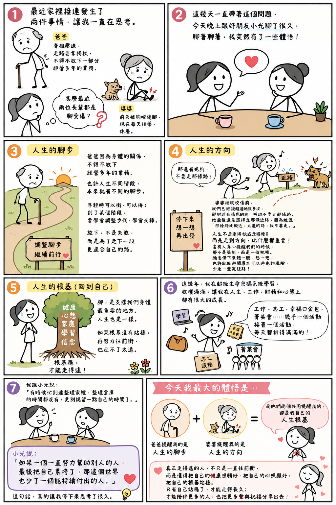

日期：2026/07/03

最近家裡接連發生了兩件事情，讓我一直在思考。
爸爸因為脊椎壓迫，現在走路都要拿著拐杖，原本負責的一部分業務，也不得不慢慢放掉。沒想到，爸爸的事情才剛發生沒多久，婆婆前天又因為被狗咬傷了腳，現在每天都要換藥、休養。我一直在想，怎麼最近兩位長輩都是腳受傷？
這幾天，我一直帶著這個問題，今天晚上又跟我的好朋友小光聊了很久。聊著聊著，我突然有了一些不一樣的體悟。
第一個讓我想到的是【人生的腳步】
爸爸這次因為身體的關係，不得不放下一部分經營多年的業務。說真的，我心裡真的很捨不得。可是回頭想想，也許人生走到不同的階段，本來就有不同的腳步。年輕時，可以衝、可以拚；到了某個階段，也許就要學會調整步伐、學會交棒。有時候，放下不是失敗，而是為了走下一段更適合自己的路。
第二個讓我想到的是【人生的方向】
婆婆被狗咬傷之前，其實我們已經提醒過她很多次，那附近有一隻很兇的狗，叫她不要走那條路。可是最後，她還是照自己的想法去走那條路。因為她說那條路比較近，太遠的路她不要走。
這件事情讓我想到，人生有時候不是走得快或走得慢的問題，而是走對方向，比什麼都重要。
而且當有人真心提醒我們的時候，也許那不是限制，而是一份祝福。如果願意停下來聽一聽、想一想，也許就能避開一些原本可以避免的風險，少走一些冤枉路。
最後，我也把這兩件事情回過頭來提醒自己。腳，是支撐我們身體最重要的地方。人生也是一樣。如果根基沒有站穩，再努力往前衝，也走不了太遠。
這幾年，我在超級生命密碼系統學習，真的非常多的收獲，讓我在人生、工作、財務和心態上都有很大的成長。工作、志工、幸福口金包、菁英會、……幾乎一個活動接著一個活動，每一天都排得滿滿的。
我笑著跟小光說：「有時候忙到連整理家裡、整理倉庫的時間都沒有，更別說留一點自己的時間了。」
小光聽完，笑著跟我說了一句話：「如果一個一直努力幫助別人的人，最後把自己累垮了，那這個世界也少了一個能持續付出的人。」
這句話，真的讓我停下來思考了很久。
我突然發現，爸爸提醒我的是「人生的腳步」；婆婆提醒我的是「人生的方向」；而他們兩個共同提醒我的，卻是我自己的「人生根基」。
真正走得遠的人，不只是一直往前衝，而是懂得把自己的健康照顧好，把自己的心照顧好，把自己的根基站穩。
只有自己站穩了，才能走得長久；只有自己走得長久，才能陪伴更多的人，也把更多愛與祝福分享出去。